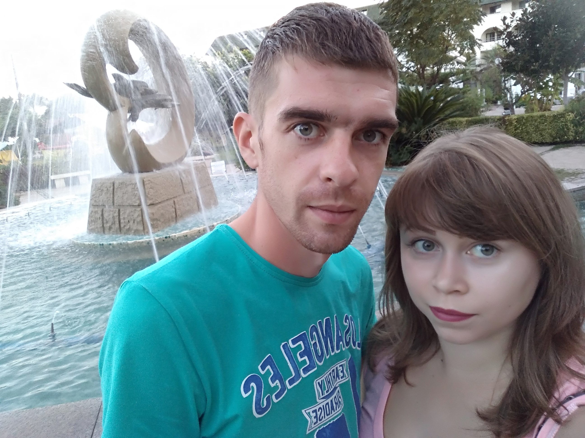
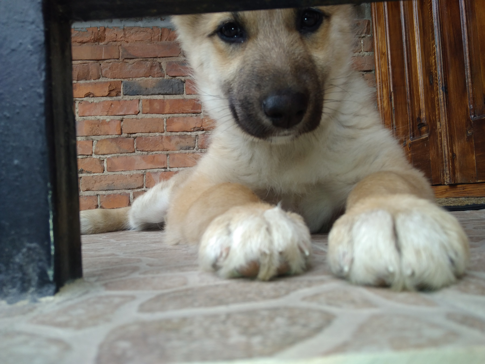
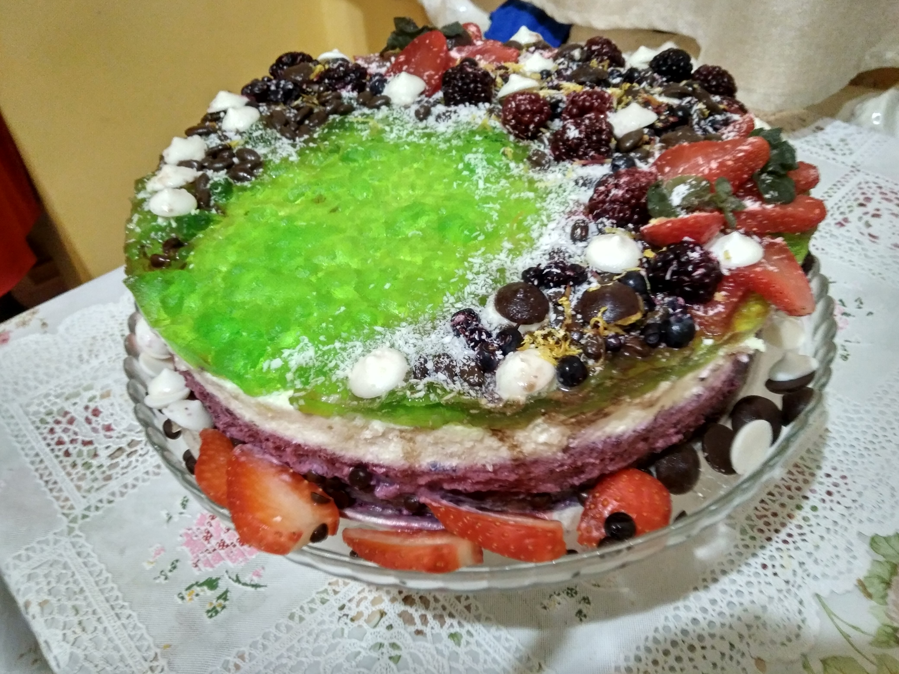
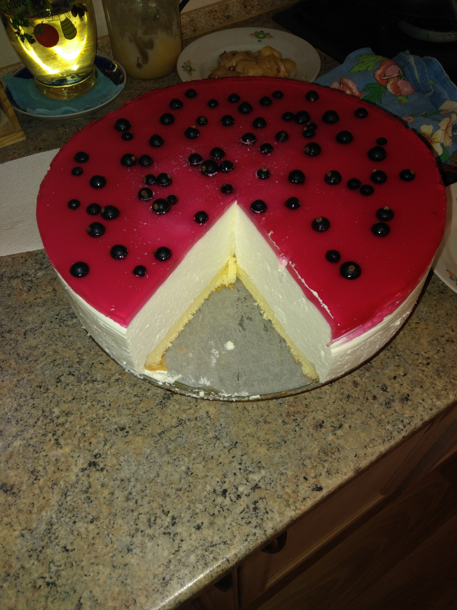
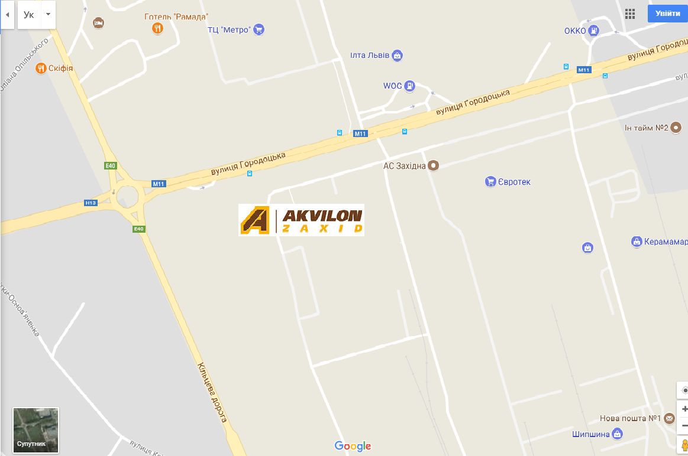

Hi guys. My name is Hanna. I'm 24 years old. From my childhood I have been liked mathematics and exact sciences.
That's why in 2010 I started to study in National Forestry University the faculty of Economics . My Specialty is Accounting and Audit. But while studying at the 5th course, I decided to find a job in a specialty in order to acquire practical skills. And I found her, because who seeks shall find. This jobs is computer operator.
My first work experience lasted one and a half years and during this time I worked in three different positions. When I realized that I ceased to develop and the work became boring, I decided to change the place of work. These changes occurred in June 2016.
Since then, I have been working as a sales manager building materials. But now I think about changes in my life again and I want to try myself in IT.
Understanding to become an IT employee my knowledge is not enough and I need to start learning. First I decided to go to English language courses. After repeating the material he studied at school and university, he wanted to teach programming in parallel with English. That's why I'm here with you.
Although the training takes me 5 evenings a week out of 7 possible, I like spending my free time with my husband, family and friends in my spare time from work, study, homework and sleep.
And also I like playing with our dog Jessica and cooking new dishes and sweets.
Another weakness is traveling, but due to lack of time, I have no opportunity at present.
   If my site is interesting to you add me in a friend Facebook
If you need building materials, then you can find us on the Internet here or here or personally to visit us at Lviv, st. Horodotsʹka, 367 